Je suis un étudiant en informatique de deuxième année à l'Institut Universitaire de Technologie (IUT) de Bayonne en France, et mon objectif est de gagner de l'expérience dans les domaines de l'IA et de la programmation logicielle comme je souhaiterais travailler dans l'un ou l'autre des deux domaines dans le futur.
Mes passions autres que la programmation peuvent etre assez variées comme je aime constamment explorer de nouvelles technologies et apprendre de nouvelles choses.
- J'aime beaucoup le sport : J'aime la callisthénie, la course et j'ai joué au basket-ball pendant 2 ans au lycée.
- J'aime aussi beaucoup apprendre des langues : j'ai appris l'anglais par moi-meme, j'étudie le japonais et le russe et ai appris un peu d'espagnol.
- Apprendre sur des sujets de mathématiques, de physique et de biologie ont aussi toujours fait partie de mes passions.
- En plus de tout cela, j'aime trouver du temps pour dessiner numériquement, j'écoute toujours de la musique et j'ai fait un peu de piano (autodidacte).
 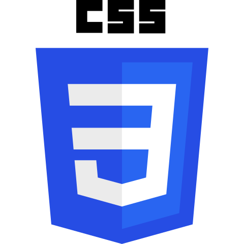
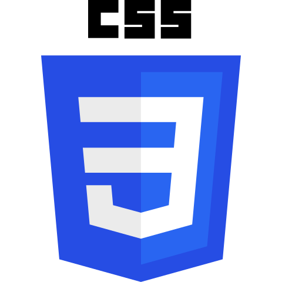
 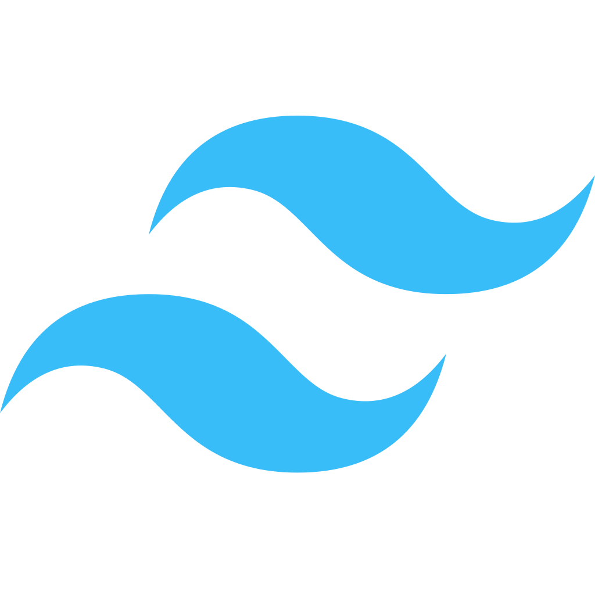
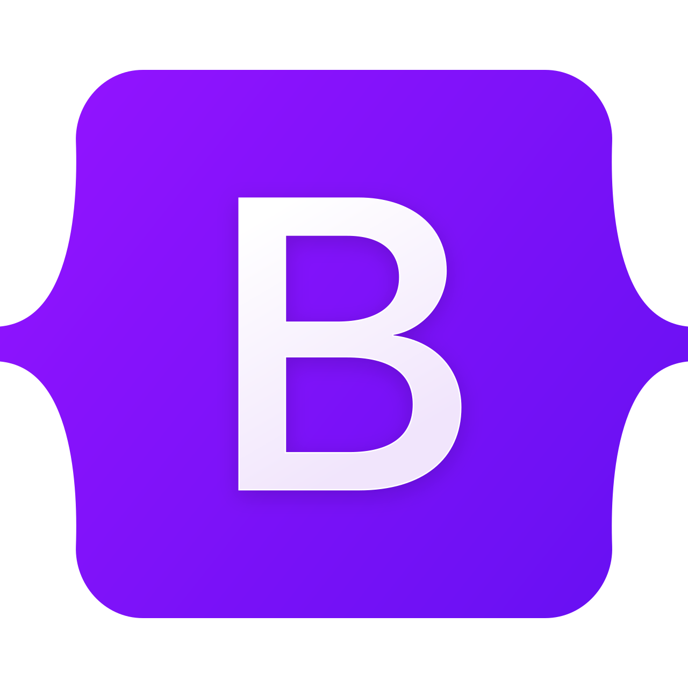
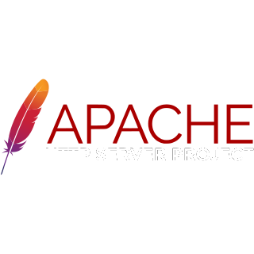
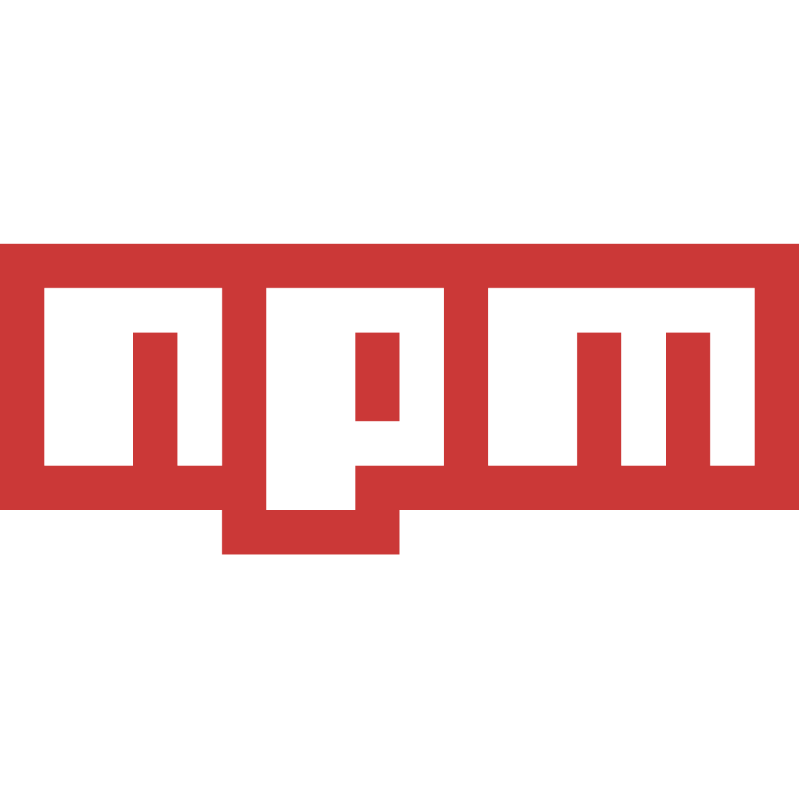
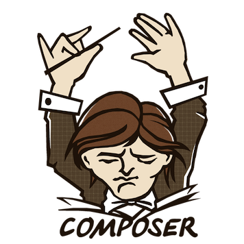
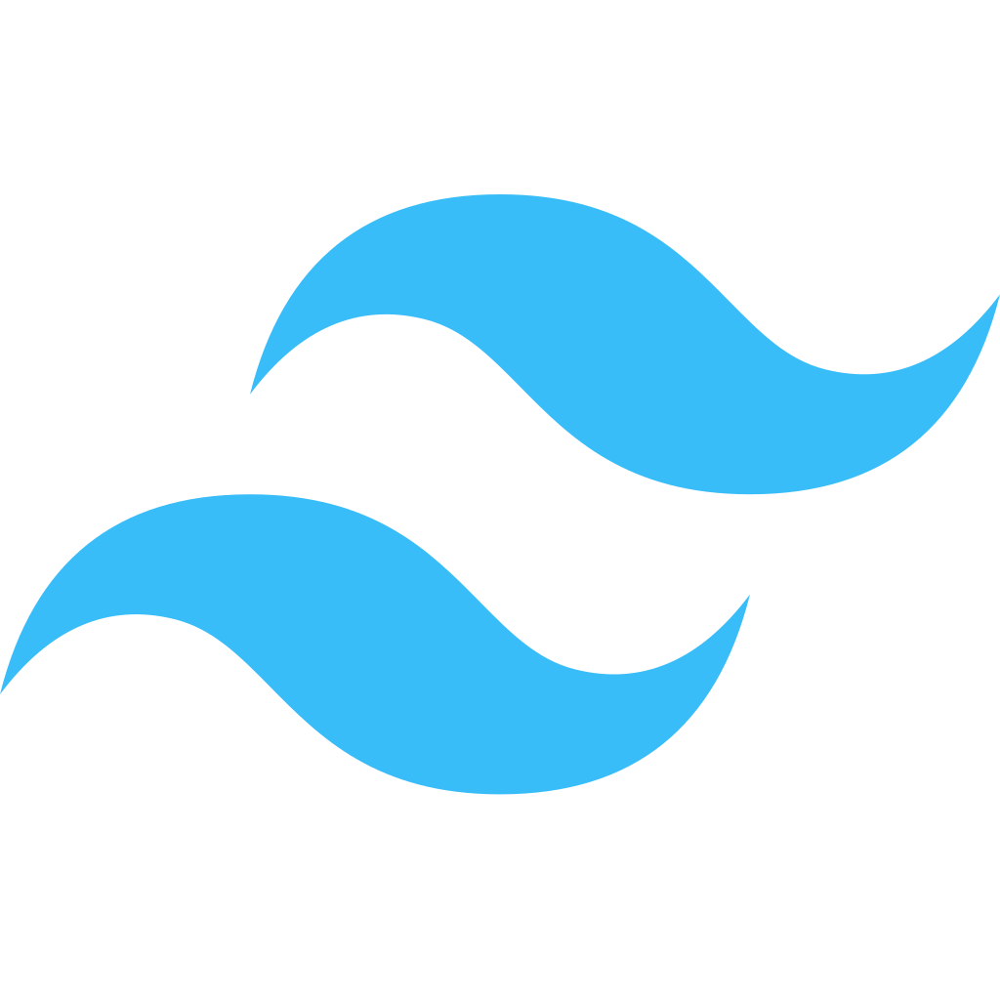
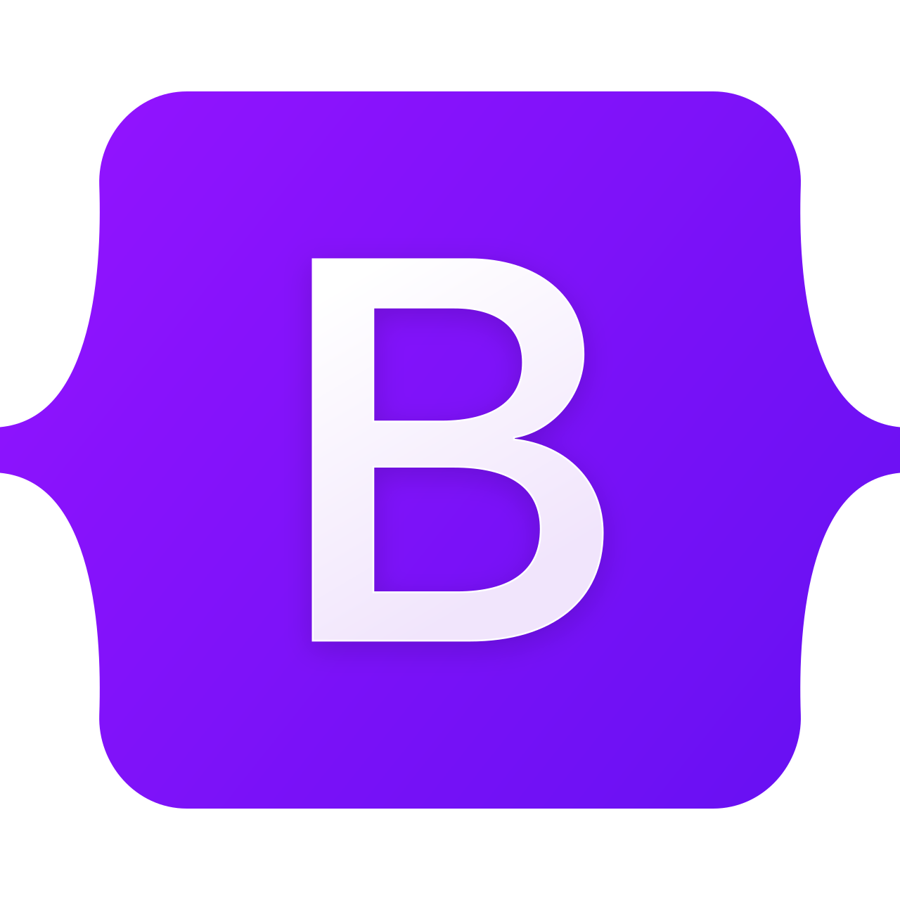
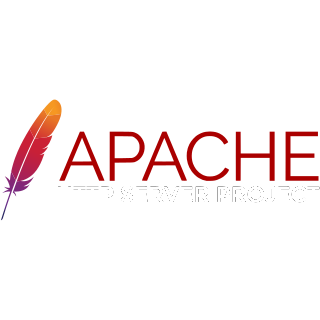
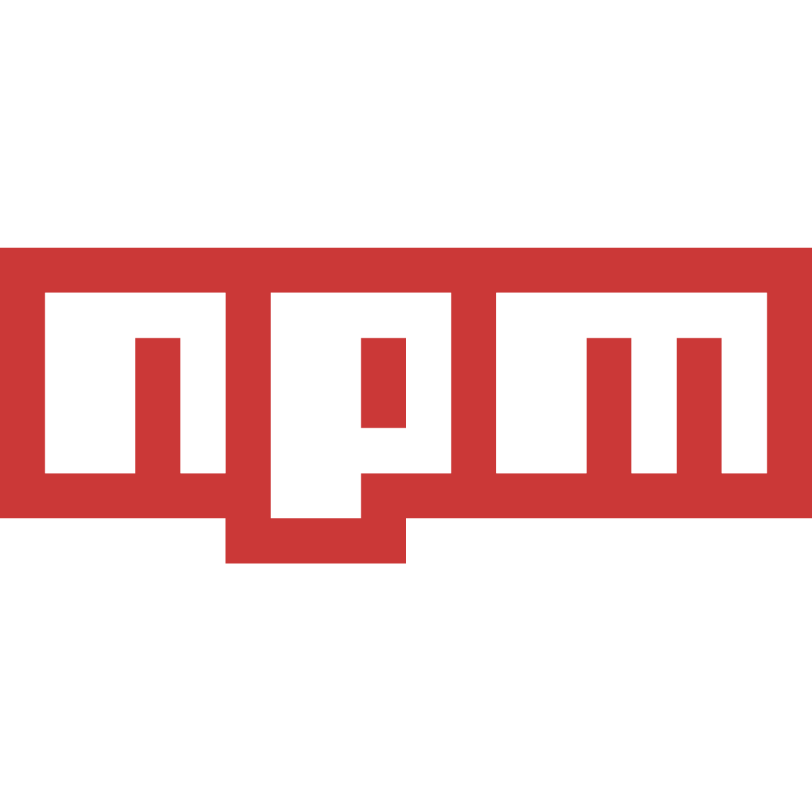
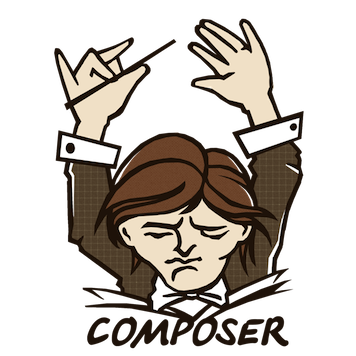


 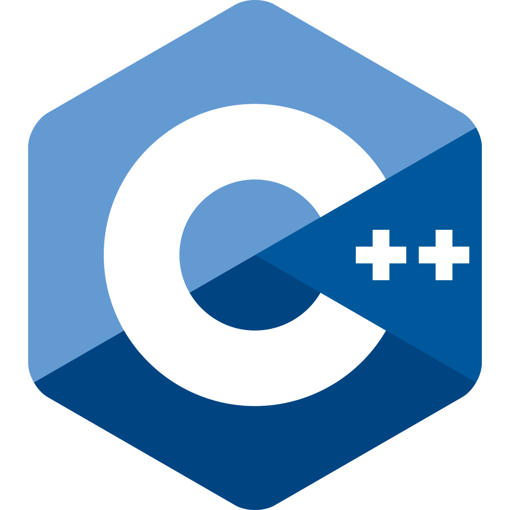
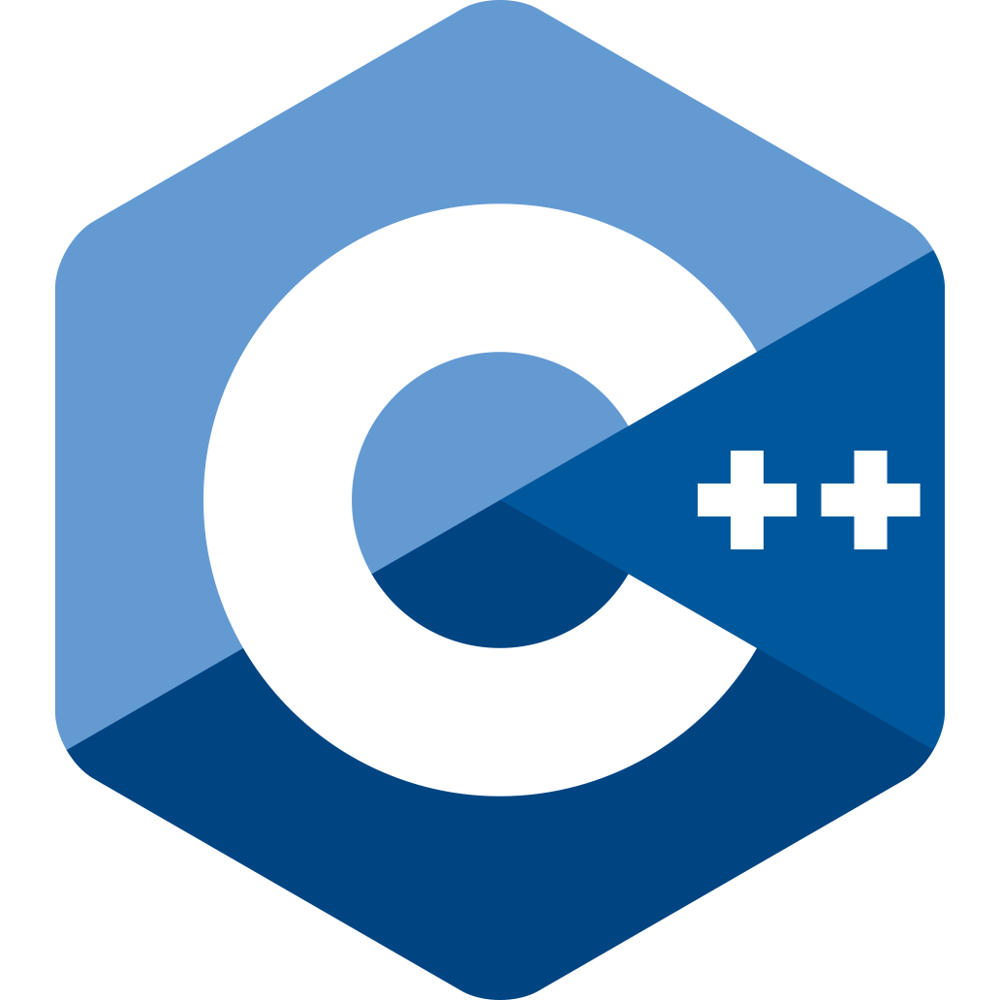


 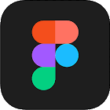
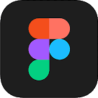

J'ai obtenu mon Baccalauréat Général Francais avec mention assez bien.
Cette formation est composée de 6 compétences sur les domaines de l'informatique: